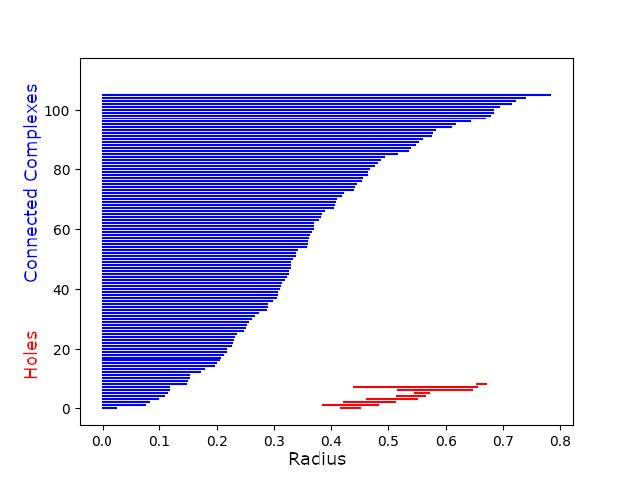
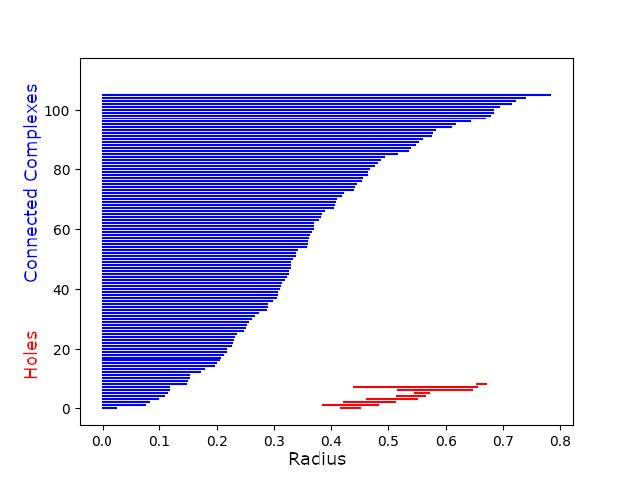
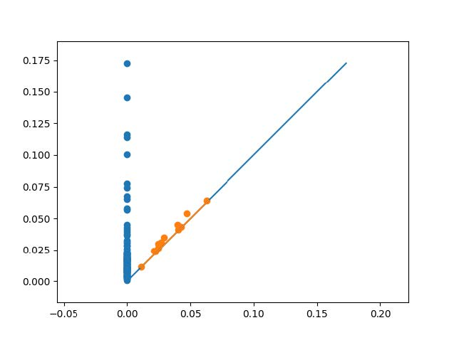

Topological Data Analysis Final Project
An Analysis of Tahoe Climate Data
Thomas Smale, Josh Meadows, Alex Richards, David Coles
Mathematics
California State University, Chico
United States
28 April 2021
Click to view the pdf version generated with Latex
Introduction
One of the most pressing matters on any college campus is climate change. Climate change is an issue that affects everyone in this world. As humans have evolved scientists believe that human actions are harming the planet. This is causing more extreme weather that is disrupting many natural habitats. As a result there may be enormous loss of both animal and human life. As students of a California State University, we have grown up in this beautiful state and come to appreciate the ground underneath us. We are concerned that human induced changes to the climate may result in our beautiful state turning to a dry desert. Working together and combining our backgrounds in math and computer science that we have learned at Chico State, we are going to apply groundbreaking methods to study our climate. One of the most beautiful regions in California is Lake Tahoe. It offers year round outdoor fun and our state depends on it for many resources. Since it is such a special place, people care about it and would hate to see it be destroyed. At 6,000 feet of elevation in the winter time it is cold and snowy, but warms up in the summertime with warm California blue skies. This diverse climate gives us many different aspects to analyze.
The data comes from the National Oceanic and Atmospheric Administration also known as NOAA, a federal government organization that documents climate all over the country. Government workers have been collecting daily data about the weather at its station in Tahoe City since 1903. This gives us over a 100 years of reliable data to analyze. These data points are available in a csv file that is about 43000 lines long. The data is multi dimensional as it has fields such as temperature, amount of precipitation, and 15 different weather types. We will combine all of these dimensions into a point cloud to study its shape. We will then analyze the data using topological data analysis to study its qualitative features.
Topological data analysis is a great way to deal with multi dimensional data that traditional methods struggle to extract value from. We will also use traditional methods such as scatter plots or line plots to visualize the data. This is to help with our understanding of the data set and confirm our conclusions. However, we expect that using topological data analysis will provide us with information about the data not seen in the traditional graphs. Using data analysis we will be able to withdraw trends about the data such as if the temperatures are increasing or the amount of yearly snow is steadily decreasing. From this we will learn more about how the climate has been changing in Tahoe, which may be a reflection of the weather patterns across California.
The amount of data being collected in the world is an unbelievably large amount that increases with each day. Data can consist of our network traffic, social media accounts, and grocery receipts. Processing all of this data is an extreme challenge and those who can make sense of it are rewarded. The market size for data science is increasing as companies look to gain a competitive edge by utilizing data to make better decisions. Data analysis is no easy feat as the size of the data, noisiness, dimensions, and incompleteness cause challenges. There are many different ways to analyze data but in the last 15 years topological data analysis has been recognized as useful in dealing with high dimensional complex data. Topological data analysis is a combination of algebraic topology, computational geometry, computer science, and more. It measures the qualitative features of data by computing the persistent homology which utilizes algebraic topology.
Topological Data Analysis allows effective and thorough examinations of all this data. In the case of Tahoe weather data there are some severe issues that needed to be overcome to be able to properly analyze the data. One such problem is the data set was first started in 1903, over 118 years ago. This creates issues where there is occasionally incomplete data spanning large gaps in time. There are also new data types added over time, such as snow, minimum temperatures, and maximum temperatures. Not only do all those issues arise, but the scale of the data is a problem that is hard to overcome. With 40,000 lines contained in the CSV file, each containing one to six pieces of data, it is understandable that being able to quickly analyze the data is a problem. As interesting as it would be to apply all the data and use TDA to analyze it, the data set is not suited for analyzing in a realistic time frame simply due to lack of proper computing power for the job.
The were many mechanisms involved to solve the gaps in the lack of data as well as the scale of it. One such mechanisms was obtaining yearly averages. As each data point was a day, spanning over a hundred years it was much more feasible to receive yearly averages than trying to process everyday, as the computations for every piece of data would take far too long. To also remedy this we are hoping to leverage a software package called Dionysus. Dionysus is written by a student who studied under Gunnar Carlson, Edelsburg at Duke, and is currently at Lawrence Berkeley Laboratory. It is written in C++ with a python interface. C++ will give the library its speed, while python will provide a interface that is friendly to work with. As a whole this will make the process proceed at a much faster pace. Another software package that has promise is Gudhi. Gudhi, similar to Dionysus, is designed specifically to handle everything Topological Analysis related. It generates data sets and visuals based on the presented data with very little need for modification. This makes the proccess much safer in the event something was incorrectly done, which leaves the end results as more reliable.
Vietoris-Rips Complexes
We will be using Vietoris-Rips Complexes to topologically analyze our data. The Vietoris-Rips Complex is a simplicial complex, which means it is made from connecting points, edges, triangles, tetrahedra, pentachora, and so on together and it can have totally separate connected complexes. The complex is created by first taking a point cloud in \(\mathbb{R}^n\), creating balls of equal radius centered at each of the points, and varying that radius. Each point in the point cloud gets a point in the complex, and whenever two balls intersect their points are connected by an edge. Then whenever three points are all connected to each other, the edges are filled in with a triangle and the same for four points all connected being filled in with a tetrahedra, and so on.
Once we have the complex, we analyze its homology. Without going into too much detail of how this is derived, we will examine how many different connected complexes there are and how long they last with the radius increasing and how many holes there are in the complex that are present for a sufficiently large range of radii. We will not be analyzing the higher dimensional analogues of holes however, as computing these would take too much time, they wouldn’t last too long anyway, and finally the data we will analyze will only have two dimensions, again out of computing power restrictions. Future projects may want to analyze these though, as with higher computing power those concerns could vanish.
To view the homology and how it changes based on the radius, we will use persistence diagrams and bar codes. Persistence diagrams plot each “feature" as a point, which will be connected complexes, holes, or higher dimensional analogues of holes. The \(x\) axis is what radius a feature appears or is”born" at, and the \(y\) axis is what radius it disappears or “dies" at. Therefore, there are no points below the line \(y=x\), and the distance from the points to that line indicates how long the feature lasted which can tell us how significant it was. Barcodes are similar, the \(x\) axis is the radius and each feature gets a bar with one end being the radius when the feature appeared and the other end being the radius when it disappeared. The bars are then stacked together along the \(y\) axis and we order them by death, with the ones that died soonest appearing at the bottom. These give us similar information to the persistence diagram, but have some differences. How long a feature lasted is instead indicated by the length of the bar, and we can more easily see trends in when features die which is especially helpful for the connected complexes.
Algorithm
To start, we decided to calculate the yearly average of the maximum and minimum temperatures. In short, this was because computation time for all points was overwhelming, but this is discussed more in the Evaluation section. When calculating the yearly average temperatures, we excluded any dates that had minimum or maximum temperatures missing for simplicity. Here is our final implementation to create our yearly averages:
with open('report/tahoe_city.csv', newline='') as csvfile:
#Use DictReader so list doesn't contain header row
climatereader = csv.DictReader(csvfile)
average_max = 0
average_min = 0
# keep track of number of dates in year to take average
num_dates_in_year = 0
for i,row in enumerate(climatereader):
if row['TMIN'] != "" and row['TMAX'] != "":
# Another date counted for the current year
num_dates_in_year += 1
average_min += string_to_float(row['TMIN'])
average_max += string_to_float(row['TMAX'])
# Get the year of the current row we are on. Date format is
# YYYY-MM-DD, so we split by "-" and get the 0th element(the year)
row_year = row['DATE'].split("-")[0]
# If we are starting a new year
if row_year != cur_year :
cur_year = row_year
yearly_maxtemps.append(average_max / num_dates_in_year)
yearly_mintemps.append(average_min / num_dates_in_year)
num_dates_in_year = 0
average_min = 0
average_max = 0The next task at hand was to create a point cloud from the data we had. It is important that our cloud had the correct dimensions that Dionysus expected. Because we had multiple one dimensional arrays, we had to combine them to make one large multidimensional array. There are many ways that one might do this, but we chose to use a convenient numpy function:
point_cloud = np.vstack((yearly_mintemps,yearly_maxtemps)).TAt this point, we have set up the point cloud, and are able to use Dionysus in order to calculate the Vietoris-Rips Complex from the data:
f = d.fill_rips(point_cloud, 3, 2)where 3 is the maximum number of dimensions, and 2 is the maximum radius of the balls. This function returns a filtration, which we then can use to get our persistence diagrams and barcodes:
p = d.homology_persistence(f)
dgms = d.init_diagrams(p,f)
d.plot.plot_diagram(dgms[0], show=True)
d.plot.plot_bars(dgms[0],show=True)where the index of dgms is the Betti number.
There were many different directions we could have went with this data set. We settled on having the minimum yearly average temperatures on the x-axis, and maximum yearly average temperatures on the y-axis. Sticking to two dimensions allows us to better visualize the data and verify that Dionysus is creating barcodes correctly.
Here is a graph of the data: And here is an example Vietoris-Rips Complex with a
radius of 0.43:
The image was created using matplotlib by scattering the points,
plotting circles with centers at each point, and then plotting lines if
any two circles intersect. Two circles intersect if the distance between
the two points is less than two times the radius. In the image, we can
see that there are two prominent holes, which we expect to see in the
barcodes and persistence diagrams for Betti 1.
Now that we have a visualization of the Viertoris-Rips Complex, we can analyze the persistence diagrams and barcodes to see if the holes we observe above are reflected in the diagrams.
Temperature Analysis
Here are the persistence diagram and bar codes obtained from
Dionysus:
 

The persistence diagram plots when a feature was created against when it
vanished, if ever. In this persistence diagram, the features represented
are connected complexes in blue and holes in orange, with the values
being the radius of the Vietoris-Rips Complex at which they appear or
disappear at. For a point, if those two values are very close together,
that means the feature disappeared quickly after it appeared and thus
isn’t as significant. In the diagram this can be seen as the distance
from the point to the line.
Due to the nature of the Vietoris-Rips Complex, all simplicial complexes start immediately as there is always a point at which none of the balls are touching and each ball contains only the point it is centered on. Then there cannot be any new complexes, as increasing the radius only causes the balls to begin to intersect and simplicial complexes to merge. This merging is what is shown in the persistence diagram as complexes vanishing.
Because of how the persistence diagram displays the connected complex data with lots of overlap in the points, it is harder to see any trends so we look at the barcodes instead. This shows that the radii at which complexes die are fairly evenly distributed. This shows that there was a wide variety of densities within the point cloud, with some points clustered together and others farther apart from other points. As there are a number of complexes surviving with higher radii, we can surmise that there are some outliers that are reasonably distant from the other points in the point cloud. We can also speculate that the more even distribution may be in part due to the yearly averages being taken instead of the full data set. Without that truncation of data, there could be more intermediate points that cause the complexes to collapse more quickly, while making the points that are outliers more clear.
Holes in the data mean that there were spaces surrounded by points nearby each other that had no points in them. The shorter they last, the more likely they are to just be noise in the data caused by a random variation in the measurements that happens to result in a hole in the data. In the persistence diagram, we can see a few holes that may be significant. This means that the yearly averages do not completely fill the interior of the of the graph, leaving the larger holes.
Precipitation Analysis
With precipitation and snow we retrieved the values in a way similar to the previous data involving minimum and maximum temperatures. In this case we compared snowfall on the x-axis and precipitation on the y-axis for our visualizations. To come up with our data points we found the averages for each year, but unlike before, this data includes both precipitation and snowfall as long as one or the other has a valid piece of data. Otherwise empty data from both precipitation and snowfall is discarded.
Having two dimensional data for the rain and snow was found to be the best way to handle plotting our points. This also allows us to verify the results from Dionysus as well as Gudhi were presented without error. The generation of the point cloud allows us to learn more about the data we are working with. By using Gudhi, another software package, and Dionysus we were able to generate figures for both the persistence and bardcodes of this data set.
Presented is the point cloud of this input data:
Here we have the persistence data and the barcodes, again from Dionysus:
 
We will use the previous analysis to help us understand this new set of data. First, the holes last for very little time, as we see they are all clustered near the line in the persistence diagram and their bars are all very short. This means the data largely saturates the area it takes up, with no large spaces with no points that would create holes.
Second, we notice in the bar codes for connected complexes that most of the complexes merge quite quickly. This tells us that much of the data is clustered quite close together. After most of them merge, there are a small number of complexes which take a lot longer to merge. This means there are a number of outliers in the data, which we can clearly see in the point cloud.
Conclusion
We attempted to analyze our climate data using topological data analysis, a field that has grown in popularity over the years. We originally hoped to potentially gain new insights on the data, but this became unrealistic as we lacked in the computational power to run topological data analysis algorithms on a data set this large. Because of this, we down-scaled tremendously, and decided to focus on two categories from our data, maximum and minimum temperatures. This was an unfortunate compromise, as we feel our results may have held more value if we were able to use more data points, or increase the number of dimensions. More computational power would have allowed us to explore a fuller range of possibilities with our data set.
Despite these setbacks, we were able to analyze the data appropriately using topological data analysis, and ended up getting results that were easy to understand. For maximum and minimum temperatures, it was clear to see from our persistence diagrams that there were two long-lasting holes in our point cloud, that both lived and died at roughly the same time. While it is unclear whether these holes are significant, it is worthwhile to note their similar birth and death times, which may lend clues to the shape of the data. For the yearly snowfall and rainfall values, we found that much of the data was clustered tightly together due to a lack of longer-living holes and that most of the connected complexes merged together quickly. There were also a number of complexes that took longer to merge together, meaning there were a few years that were outliers from the bulk of the data.
There are a lot of interesting insights that could be made from this data. In the future, it would be worthwhile to explore the relationship between the different categories of data, potentially in more than two dimensions. It is clear that the results of the topological data analysis tools we used were consistent with the visualizations of the point cloud we made in two dimensions. This is promising, and gives us confidence to move to higher dimensions, where visualizing the Vietoris-Rips Complex is no longer an option.
We also have created usable skeleton code for reading in data sets, translating them into meaningful data structures, and utilizing Dionysus in order to get the persistence diagrams and barcode. On top of this, we created a way to animate the Vietoris-Rips Complex as the radius grew. This will be applicable to other data sets as well, when considering whether or not they would be a good candidate for topological data analysis.
Overall, we gained new insight on topological data analysis, and how it can be applied not only to our specific data set, but any general data set. While the persistence diagrams can be a bit more confusing than traditional data analysis methods, it is undeniable that there is significance in them. While topological data analysis might not be the best option for certain data sets, it is a worthy option to consider. We look forward to using these newfound skills on future data sets to try and extract meaningful information.
References
Otter, N., Porter, M.A., Tillmann, U. et al. A roadmap for the computation of persistent homology. EPJ Data Sci. 6, 17 (2017). https://doi.org/10.1140/epjds/s13688-017-0109
J. D. Hunter, “Matplotlib: A 2D Graphics Environment", Computing in Science & Engineering, vol. 9, no. 3, pp. 90-95, 2007.
Python Library Dionysus by Dmitriy Morozov
GUDHI User and Reference Manual, The GUDHI Project, GUDHI Editorial Board, 3.4.1, 2021, “https://gudhi.inria.fr/doc/3.4.1/\”
Past Weather by Zip Code - Data Table. Past Weather by Zip Code - Data Table | NOAA Climate.gov. (n.d.). https://www.climate.gov/maps-data/dataset/past-weather-zip-code-data-table.
Evaluation
We encountered several challenges during this project. To start, documentation for Dionysus is fairly sparse, and unfinished. It was unclear what format Dionysus expected the point cloud to be in, the syntax of the filtration returned by the Vietoris-Rips function, and what to do with the filtration once we had it. Another struggle we encountered was the amount of computation time that calculating the Vietoris-Rips Complex took. At first, it was very hard to pinpoint the issue, because the program would never come to completion. Even after cutting our data size in half, it would still run for an indefinite time, with one notable run taking over 2 hours before it was force-quit. In an effort to see if the program would ever complete, we used around 100 points, which would take at most a minute to two minutes. We decided this was a range that we felt comfortable with, and decided to instead take the yearly averages of the data, in order to decrease the size of the point cloud.
To download the csv files from NOAA one must fill out a request with the desired fields. There were limitations to the data requests, like the file size must be under a gigabyte. So the fields and years were strategically chosen to be just less than a gigabyte. Some requests took a few days to be fulfilled when it was supposed to take no longer than 24 hours. All of these values were inputted as strings even though the values for fields like temperature were integers. So each row that was read in needed to be casted to its appropriate value like an integer or floating point value. There are many ways to read in a csv file in python, but the most elegant was the dictionary reader because it did not include the first row which is the title of all the columns.
There were also several elements of the project that went particularly well. We were able to plot the data with ease, and even made an animation of the Vietoris-Rips complex with an increasing radius. This helped us visualize the data and try and make sense of our diagrams and barcodes. Another method we used the visualize the data was using Matplotlib. This was a new library which required some getting used to. The input for these graphs are one dimensional numpy arrays which were different than our multi dimensional arrays. Our scatter plots also had too many points for Matplotlib to display in a readable format. This required breaking the problem down into smaller ones by decreasing the data set without compromising its integrity. It became a very powerful tool as we learned how to customize our graphs by manipulating their properties like size, axes, and style. As we became more used with Matplotlib we were able to utilize it to visualize graphs to see what would be most useful to apply Dionysus too.
The four of us spent at least 20-30 hours on this project. A good amount of time was spent trying to work with our csv file and Dionysus, but the main portion of our time went to examining our results and trying to find meaning from them. We also found notable issues with applying the data to TDA. When handling the information, certain visualizations and graphs came out looking very clumped, which made the data much harder to truly understand. This mostly occurred when plotting the vietoris-rips where we had a large grouping of lines and bubbles that blended together. Overall these issues did not hinder the progress of the project. Throughout the course of the project we were all very self sufficient and were able to find resources for help if needed, but we mostly all helped one another meet goals.